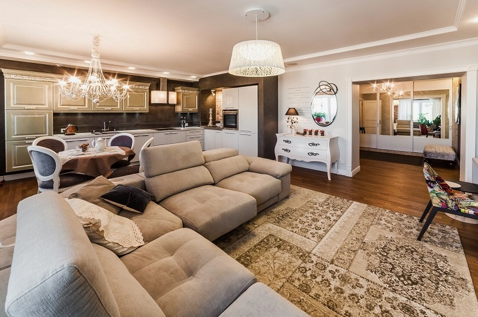
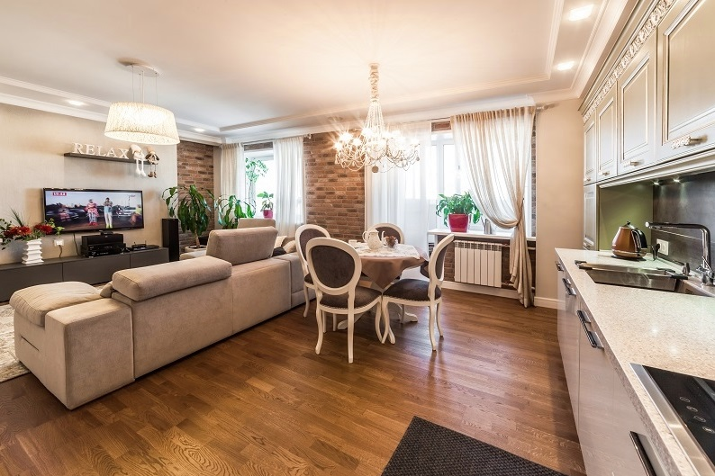
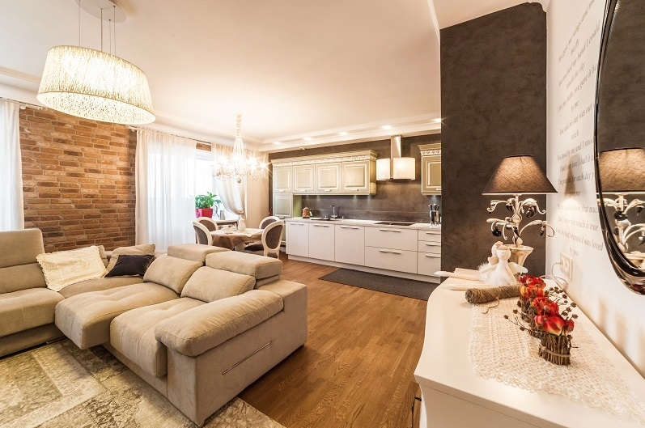
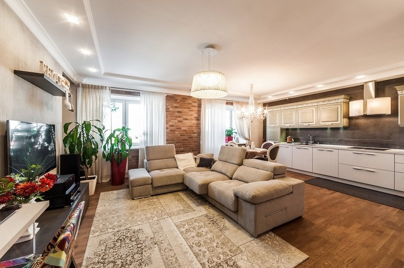
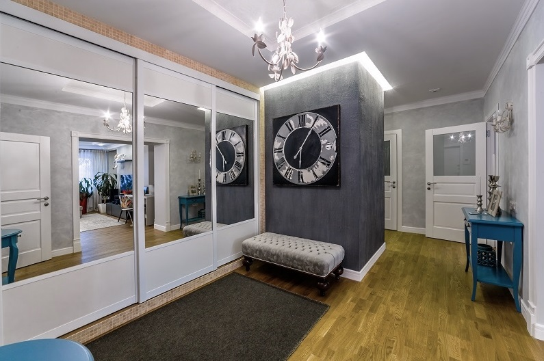
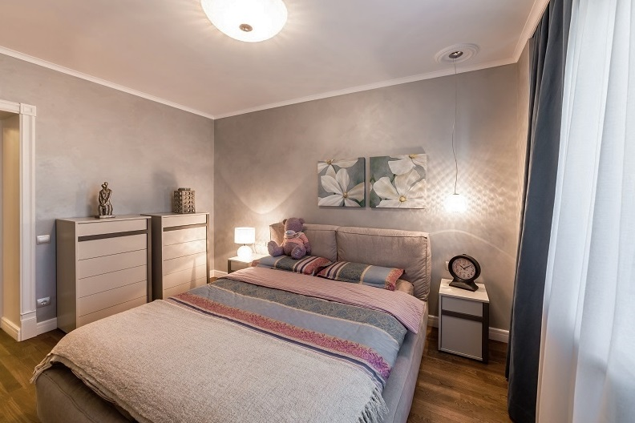

Счастье в доме
«Интерьер – это отображение внутреннего мира, души и состояния создателей дома. Для дизайнера очень важно до начала проектирования погрузиться в жизнь заказчика, примерить на себя этот образ.
Дом, который мы представляем вашему вниманию, – это квартира в новостройке площадью 95 квадратных метров с привычными для Севера, но недостаточно высокими потолками. Сразу же было решено, что будет выполнено объединение кухни и гостиной комнаты.
Планировка квартиры не требовала кардинальных изменений, так как, на наш взгляд, проект дома достаточно хороший, с пропорциональными комнатами. В приватной части квартиры располагается ванная комната, в общей же – гостевой санузел, и, что интересно, это помещение визуально является частью прихожей. Спальня и детская комнаты расположены в приватной части квартиры, между ними разместилась ванная комната.
Далее велась техническая проработка проекта, соединение стилистических составляющих с выбором реальных объектов мебели и света. Да, выбор предметов мебели, как ни странно, надо делать еще на начальной стадии проекта, потому здесь и определяются возможные доминанты интерьера. В нашем случае так и случилось – совмещенные модели кухонь фабрики VERONA из дерева оливкового цвета и белого лака задали настроение и цветовую гамму всему интерьеру. Благородство дерева и прямолинейность лака, совмещение разных стилистик, фактур и цветов – вот что здесь дает основной акцент и «изюминку».
Дали знать о себе пристрастия хозяев квартиры к путешествиям – любовь к Европе, а, значит, и ко всему натуральному. Так, в интерьере на стенах появился бетон, везде штукатурка, кирпич, паркетная доска. Как уже говорили, основная идея планировочного решения – создание единого пространства кухни-гостиной. Фактически эта часть квартиры должна была сочетать в себе не только кухню и гостиную зону, но и столовую группу, полноценное рабочее место и место для вдохновения. Именно таким волшебным образом мы обозначили расположение красивого комода с зеркалом, фоном для которого явилась стена со значимым текстом.
Каждая зона имеет свое освещение, что гармонично добавляет интерьеру теплоты и уюта. А нейтральное цветовое решение добавляет шика и акцентирует внимание на декоре интерьера.
Любопытно, что хозяева квартиры не захотели использовать обои и керамическую плитку во внутренней отделке. Исключением стали лишь ванная комната и гостевой туалет. Согласитесь, что тепло деревянного пола заменить не сможет даже подогрев керамики. Решением дополнительной защиты деревянных полов в области кухни и прихожей стали специальные «прочные» ковры ручной работы. Деревянный пол в кухне и прихожей дополнительно защитили специальные ковры ручной работы.
Свой выбор мы остановили на изысканной классической белой кухне LADY. Специалисты салона учли все наши пожелания, разработали индивидуальный дизайн – проект. Были сомнения по установки острова на кухне, т.к. был риск потери пространства. Но Юлия грамотно и профессионально убедила нас в том, что остров не только сохранит пространство, но дополнит кухню изяществом и красотой, а главное принесет дополнительные удобства! Мастера по сборке четко и профессионально, следуя проекту, превратили нашу мечту об элегантной и функциональной кухне в реальность
Юлия Бажукова
дизайнер салона мебели VERONA
Практически вся мебель была заказана в Италии, часть декора – из Франции, остальное привезено хозяевами дома из путешествий. В интерьере использовались исключительно самые доступные вещи и материалы, потому что экономичность – это первое условие заказчика.
Самое важное в любом проекте – это реализовать дом для людей, а не подстраивать людей под стереотипные интерьеры.
Живые эмоции – это лучшая передача атмосферы интерьера».
Обращаясь в салон Верона, было некое опасение чего-то неизвестного, так как обратились за профессиональной помощью впервые. Наше опасение развеялось, как только мы познакомились с коллективом салона, а именно с Бажуковой Юлией. Покорило гостеприимство, обязательность, в каких-то случаях терпение…Работа была не быстрой, но результат, в виде белоснежной кухни с оливковыми вставками, превзошел все ожидания!
В итоге, кухня – это самое главное и самое уютное место в нашей квартире.
Татьяна Николаевна
дзаказчик проекта

Обсуждения (уже есть 3 комментария)
Владимир 24.03.2015 • 12:27
Подготовить рыбу, сняв кожу с филе и промыв его под проточной водой. Разрезать филе на порции. Смазать маринадом кусочки рыбы, посыпать специями для рыбы и слегка подсолить. Оставить рыбу мариноваться минимум на 30 минут.
Анна Константинова 24.03.2015 • 10:11
Предлагаю приготовить вкусную запеченую в духовке рыбу. Я взяла филе форели, но можно использовать любую красную рыбу. Овощи так же используются те, которые есть в наличии. У меня была смесь замороженных овощей и обязательно - свежие. Неизменными остаются лук, чеснок, помидор и болгарский перец. Дальше работает только ваша фантазия. Рыба получается вкусной, а овощи сочными.
Хотите участвовать в будущих событиях, cooking show, презентациях Verona For Me? Присоединяйтесь к нашему клубу!
Вас ждут участия в интересных мероприятиях, подарки, скидки и бонусы у наших партнеров и много других приятных мелочей.
Похожие публикации

Вдохновение классикой
Стенка и столовая группа подобраны в едином стиле с кухней и являются ее органичным продолжением. Раздвижной стол и стулья - еще один островок для семейного и дружеского общения. У нас гостиная комната не отделена дверью, и мне нравится, что находясь на кухне, я вижу детей и стараюсь держать все под контролем.

Интерьер в стиле Кантри
Основные черты кантри, как стиля интерьера, – это простота, отсутствии лишних декораций и, как следствие, высокая функциональность. Следует также отметить, что стиль кантри характеризуется уютом, комфортом с романтикой. Кроме того, кантри способствует улучшению настроения и настраивает на приятное проведение свободного времени особенно в кругу семьи, друзей и знакомых.

Клубника со сливками
SHOW ROOM VERONA – это отражение европейских ценностей в одном пространстве. Итальянский дизайн, испанский темперамент, французская утонченность при немецкой точности – это все интригует и впечатляет. Шоу рум собрал в себе новинки самых трендовых фабрик, размещенных в современном интерьере салона, при создании которого использовались идеи итальянских дизайнеров.

{kind=link}
{kind=link}
{kind=link}
{kind=link}
{kind=link}
{kind=link}
{kind=link}
{kind=link}
Лариса Сергеева 24.03.2015 • 12:43
Если первый раз я спешила и неудачу списала на спешку, то вернулась к рецепту во второй раз, специально с большим запасом времени. Все равно тесто получилось не эластичным, крошилось, слишком сухое, не возможно раскатать. Такое чувство, что ему не хватает жидкости и сахара.